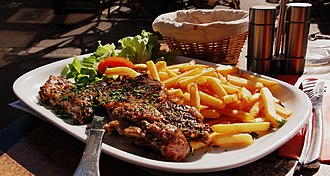
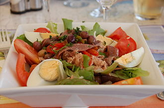
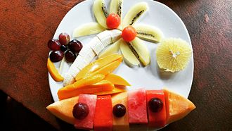

Le steak frites est un plat fréquemment servi en brasserie et dans les restaurants. C'est également un plat familial dans les contrées où les frites font partie des habitudes culinaires. Étant le plat principal, il peut être précédé d'une entrée, et suivi de fromages et/ou desserts. Le consommateur est amené à préciser la cuisson1 voulue pour la viande dans la gamme suivante : bleu, saignant, à point et bien cuit, c'est-à-dire de la cuisson la plus courte jusqu'à la plus longue. Les frites sont servies chaudes. Il est agrémenté ou non de salade et de sauces. Plusieurs pièces de boucherie peuvent être utilisées pour élaborer un steak frites, dont notamment l'entrecôte.
La salade niçoise est une spécialité culinaire de salade composée traditionnelle de la cuisine niçoise, à ce jour répandue dans le monde entier sous de multiples variantes et adaptations. Elle constitue l'une des principales entrées des cuisines provençale et méditerranéenne, voire un repas à part entière.
La salade de fruits est un dessert, mais il est composé d'un mélange de fruits. La salade de fruits peut se déguster en toutes saisons. Il en existe différentes recettes en fonction des saisons ou des pays. Dans certains pays, la salade de fruits est pimentée, comme le rujak de la cuisine indonésienne.
Et dire que… Le plus difficile est de faire SIMPLE, c’est réussi ! Bravo Damien, de l’esprit des saveurs, de la délicatesse dans l’assiette et la salle. Avec notre amitié. Rika et Fred Bau
| NOM DE REPATS | DESCRIPTION | PRIX | DISPONIBILITE |
|---|---|---|---|
| chawarma | viand et frite | 250da | 200 |
| creps | nutela et fruits | 300da | 150 |